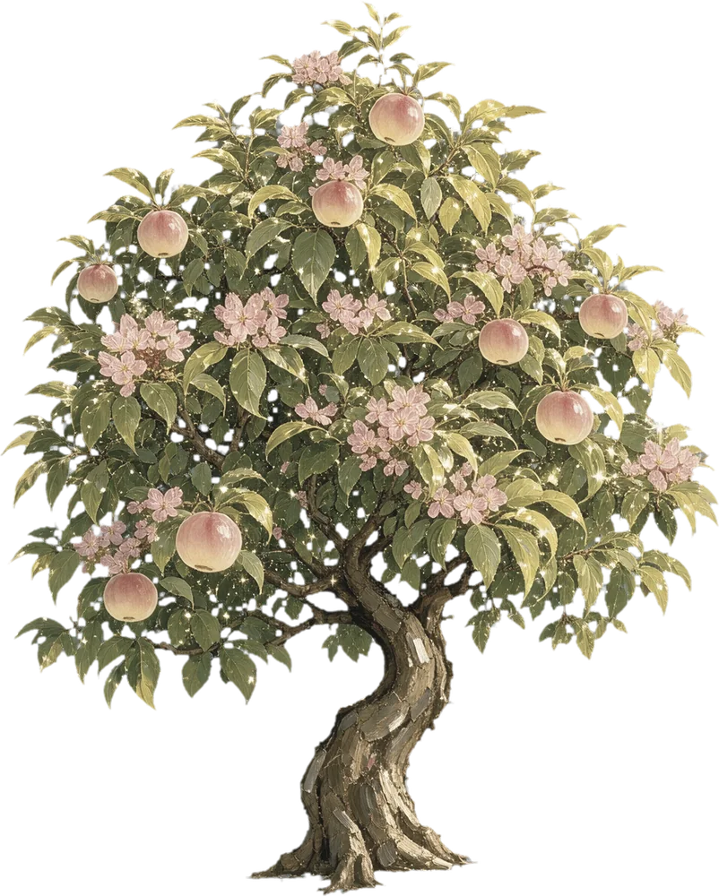

理念
母娘深知世俗重擔，承諾給予無經濟壓力的修行之道。
- 理解
- 我們明白大家在生活中都有各自的重擔與責任。
- 承諾
- 為了讓修行更加從容、不為雜支煩惱，道場全年的固定活動僅包含特定項目。
- 透明
- 其餘時間並無額外費用。只要預先規劃，就能在無經濟壓力的情況下，獲得全年的護持。
三層護持
從核心防護到隨喜感恩。點一圈，那一圈會亮起來。
- 光明燈與新春祭改。全年僅需預留此項實質開支，建立完整能量防護網。
- 八月蟠桃盛會。為歷代祖先與冤親債主設立牌位，自由報名，價格透明。
- 聖誕與週年慶。不設門檻，隨喜發心，純粹感受「回娘家」的法喜。
元旦 · 核心項目一
光明燈
道場有別於傳統制式，依個人流年需求專屬點燈。並遵照母娘交代於「元旦」啟燈，為您搶先承接交脫運勢，提早點亮全年元辰光彩。
- 小燈$1,200／盞
- 大燈$3,600／盞
新春 · 核心項目二
新春祭改
以「祭改」為基石的自選客製化模組。依個人新年展望加選對應項目，讓祈福效果最到位。
核心交集
您全年的從容後盾
道場全年僅需為『光明燈』與『新春祭改』這兩項核心預留實質開支。
為何缺一不可？唯有透過這兩項的連結，師姐與道場方能為您建立起完整的能量防護，精準觀照護持，成為您最從容的後盾。
農曆八月 · 自由參加
蟠桃盛會

八月蟠桃盛會普施。為歷代祖先與冤親債主設立牌位，自由報名，價格透明。
待填牌位的價錢和報名方式。
不定期 · 隨喜功德
母娘聖誕與週年慶

母娘聖誕與肇基週年慶，是道場最溫馨的團聚時刻。感恩母娘整年的慈悲護佑，期盼您以歡喜自在的心「回娘家」，共享法喜。
- 『祝壽金』隨喜發心，不設門檻。
- 敬請利用「匯款」，俾利道場精確造冊、向母娘呈稟文疏。
待填匯款的帳號。
全年平安藍圖
- 元旦啟動光明燈核心預留
- 新春祭改與祈福模組核心預留
- 農曆八月蟠桃盛會普施自由評估
- 不定期聖誕與週年慶回娘家隨喜同樂
只要每年預先留心這份藍圖，即可在無經濟壓力的從容中，確保整年的元辰光彩與家宅平安。道場，永遠是您最堅實的護持。
預約與聯絡
待填要不要預約、怎麼聯絡（電話、LINE）。